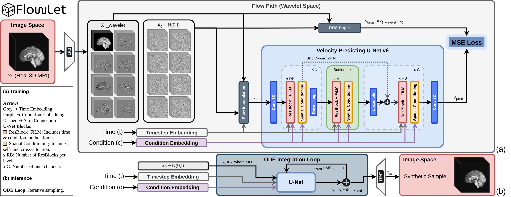
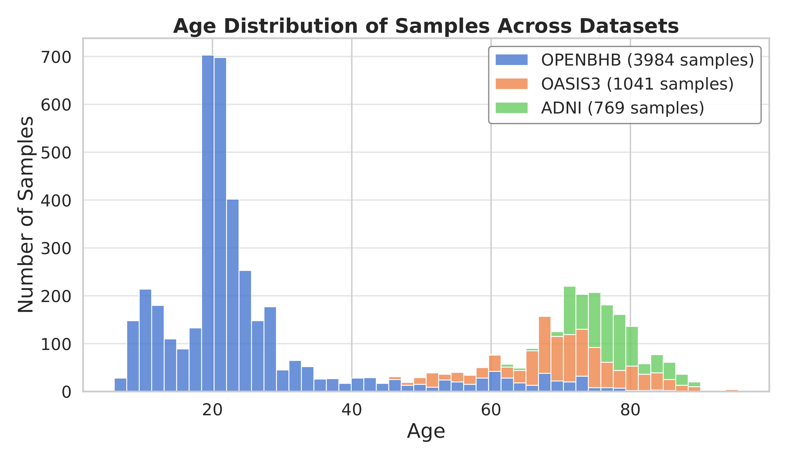
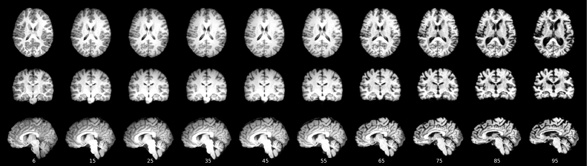
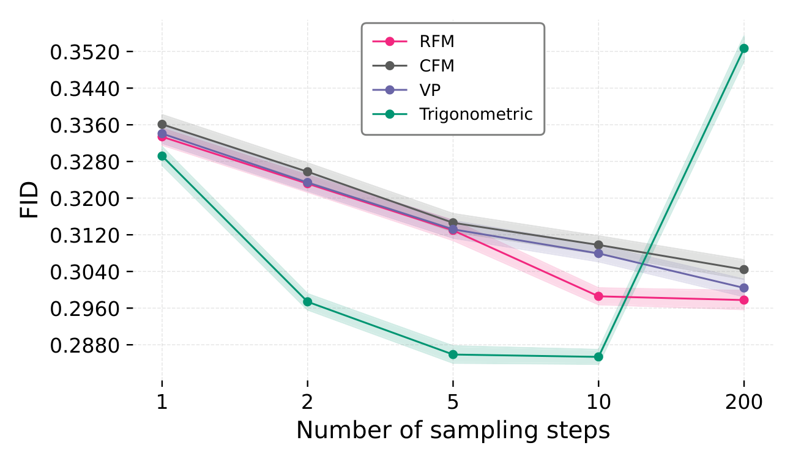
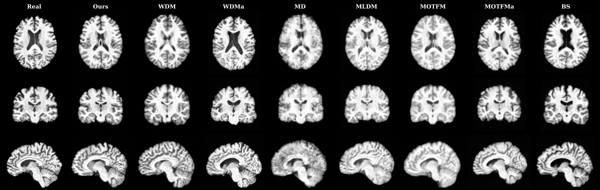
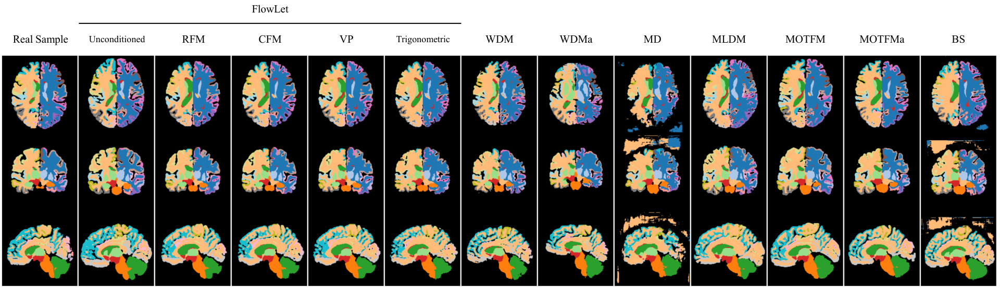

1 Politecnico di Bari, Italy · 2 Sapienza University of Rome, Italy
* Corresponding authors
The Medical Image Analysis article is the peer-reviewed version of record. The arXiv preprint is an earlier version and may differ from the published paper.

Highlights
A single-stage generative framework that brings Flow Matching into a fixed, invertible wavelet domain: fast to sample, controllable, and anatomically faithful.
Generative modeling directly in the 3D Haar wavelet domain — multi-scale, with no learned latent compression.
Complementary FiLM modulation and spatially adaptive cross-attention give explicit control over localized, age-related morphology.
Deterministic ODE sampling generates high-quality volumes in just a few steps.
Evaluation across 95 cortical/subcortical regions and a downstream brain-age prediction study, beyond global metrics.
Methodology, code, and evaluation protocols are released free and open-source.
A ~1B-parameter 3D U-Net that trains within 24 GB of VRAM.
Abstract
Generative modeling for 3D brain MRI is challenged by a trade-off between anatomical fidelity, sample diversity, and computational efficiency. Diffusion-based approaches achieve strong visual quality but typically require hundreds to thousands of sampling steps, while latent-space compression can introduce reconstruction artifacts and degrade fine-grained anatomy. We introduce FlowLet, a conditional generative framework that performs Flow Matching in an invertible 3D wavelet domain. This representation enables multi-scale generation without learned latent compression, while deterministic ODE sampling allows fast inference. Age conditioning is modeled through complementary feature-wise modulation and spatially adaptive cross-attention, enabling explicit control over age-related morphological variation. Across multi-site neuroimaging datasets, FlowLet achieves competitive and, in several settings, superior global fidelity compared to diffusion-based baselines using as few as 10 sampling steps. Region-based evaluation across 95 cortical and subcortical brain regions demonstrates improved local anatomical plausibility beyond what is captured by global similarity metrics alone. In a downstream brain age prediction study, models augmented with FlowLet-generated data consistently reduce prediction error relative to real-only training and other generative baselines. The proposed framework is released as open-source to support reproducibility.
The challenge
Brain-age prediction needs large, diverse, age-balanced cohorts — yet public 3D MRI datasets are demographically skewed, and existing generators force a hard trade-off.
Sample quality, diversity, and sampling efficiency pull against each other, improving one usually degrades another.
Latent compression speeds things up but can blur fine-grained anatomy that age-related analysis depends on.
Young and middle-aged adults dominate; pediatric and elderly groups are under-sampled, biasing downstream models.

The method
A single-stage pipeline: decompose the volume with an invertible 3D Haar transform, learn a velocity field that transports Gaussian noise to data in wavelet space, then reconstruct with the inverse transform.
Each volume is split into one low-frequency subband (coarse anatomy) and seven high-frequency subbands (fine detail), lossless and learning-free.
A conditional 3D U-Net predicts the flow-matching velocity field. Age is injected via FiLM and spatial cross-attention. Sampled by a deterministic ODE solver.
The generated wavelet coefficients are mapped back to a full-resolution volume by the inverse transform, no learned decoder, no compression artifacts.

Results
FlowLet is competitive on global metrics and stronger where it matters anatomically, region-level fidelity and downstream clinical utility.



FlowLet reaches a mean ROI Dice of 0.420 across all 95 cortical and subcortical structures, preserving anatomy that global metrics can overlook.
Strong FID, MMD and MS-SSIM scores while sampling deterministically in only a few steps.
Augmenting training with FlowLet samples lowers brain-age prediction error, with a 4.01-year MAE on underrepresented ages.
Perspective
In volumetric brain MRI a single global score can quietly mislead. Most voxels are background or non-informative, so distribution-level metrics such as FID and MMD can look favorable even when clinically relevant anatomy is wrong, and a generator can be rewarded simply for drifting toward an "average" brain.
This is why we treat intra-set MS-SSIM not as a quality target but as a relative diversity signal: interpreted under consistent conditions and read alongside global fidelity and region-level anatomy, it exposes the mode collapse that aggregate numbers hide. Only when these measures are read together do they give an honest, anatomy- and task-aware picture of generative quality, which is exactly why FlowLet is evaluated across 95 regions and a downstream clinical task, not a single headline number.
How we frame and interpret each metric, and where they break down, in the paper →
Code & data
The complete PyTorch implementation, training/generation scripts, and evaluation protocols are released openly.
The reference release of FlowLet: training, generation, and the dataset catalog.
github.com/sisinflab/FlowLetOngoing development, experiments, and future enhancements.
github.com/Danesed/FlowLetCitation
If you find FlowLet useful, please cite the paper.
@article{danese2026flowlet,
title={FlowLet: Conditional 3D Brain MRI Synthesis using Wavelet Flow Matching},
author={Danese, Danilo and Lombardi, Angela and Attimonelli, Matteo and Fasano, Giuseppe and Di Noia, Tommaso},
journal={arXiv preprint arXiv:2601.05212},
year={2026}
}